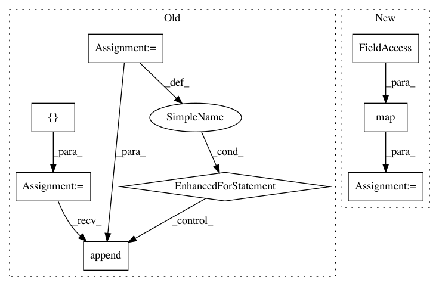

aa0403c9be44756658c1d4f2b10993303d5407b2,deepchem/featurizers/featurize.py,DataFeaturizer,featurize,#DataFeaturizer#Any#Any#Any#Any#,135
Before Change
featurizers=self.featurizers, tasks=self.tasks)
input_type = _get_input_type(input_file)
metadata_rows = []
for shard_num, raw_df_shard in enumerate(load_data(input_file, shard_size)):
log("Loaded shard %d of size %s from file." % (shard_num+1, str(shard_size)),
self.verbosity)
log("About to featurize shard.", self.verbosity)
def process_helper(row, fields, input_type):
return self._process_raw_sample(input_type, row, fields)
process_fn = partial(process_helper, fields=raw_df_shard.keys(),
input_type=input_type)
metadata_rows.append(self._featurize_shard(
raw_df_shard, process_fn, write_fn, shard_num, input_type))
// TODO(rbharath): This whole bit with metadata_rows is an awkward way of
// creating a Dataset. Is there a more elegant solutions?
dataset = Dataset(data_dir=data_dir,
metadata_rows=metadata_rows,
reload=reload, verbosity=self.verbosity)
return dataset
After Change
if worker_pool is None:
worker_pool = mp.Pool(processes=1)
metadata_rows = worker_pool.map(
map_function, enumerate(load_data(input_files, shard_size)))
// TODO(rbharath): This whole bit with metadata_rows is an awkward way of
// creating a Dataset. Is there a more elegant solutions?
dataset = Dataset(data_dir=data_dir,
In pattern: SUPERPATTERN
Frequency: 3
Non-data size: 8
Instances
Project Name: deepchem/deepchem
Commit Name: aa0403c9be44756658c1d4f2b10993303d5407b2
Time: 2016-07-07
Author: bharath.ramsundar@gmail.com
File Name: deepchem/featurizers/featurize.py
Class Name: DataFeaturizer
Method Name: featurize
Project Name: bashtage/linearmodels
Commit Name: 1345f1b1b41c047a95deff2442283025c3f6269f
Time: 2019-03-12
Author: kevin.k.sheppard@gmail.com
File Name: linearmodels/tests/panel/test_panel_ols.py
Class Name:
Method Name:
Project Name: scipy/scipy
Commit Name: ae48107da00e0aacf61f87e58c201c9243e946ea
Time: 2016-02-16
Author: tyler.je.reddy@gmail.com
File Name: scipy/spatial/spherical_voronoi.py
Class Name:
Method Name: calculate_surface_area_of_planar_polygon_in_3D_space